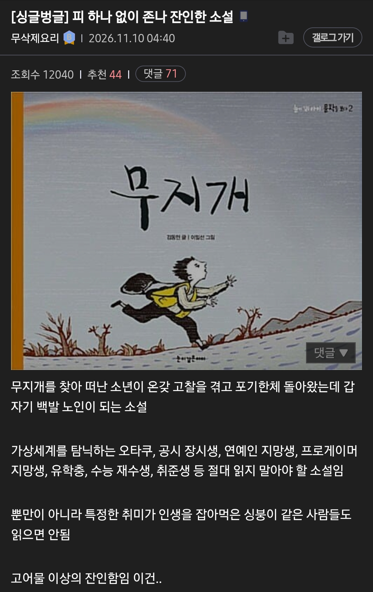

피 하나 없이 잔인한 소설
댓글
돌이켜보면 저걸 왜 초딩 교과서에 넣었는지 모르겠음
당시기준 하나도 디해못함
나도 이거 전혀 이해못하다가 대학생 언저리쯤 갑자기 생각나면서 “아니… 그 소설은 대체 뭐였지? 왜 초등학교 교과서에 있던거지? ” 하는 생각부터 듦
꿈을 포기하면 노인이 되니까 킵고잉하라는 내용이구나!
꿈을 포기하지 않은 나는 아직 청년이다!
꿈을 포기할바엔 그냥 죽어라!
그렇다면 나는 영생하겠다!

나도 교과서인가 어디서 본 내용 같은데
무지개 찾아 떠나는 애들이 존나 많았던걸로 기억하는데 맞나
ㅇㅇ 맞음 엄마가 가지말라 하는데 본인도 출발, 중간중간 낙오된 아이들만나고 너라면 무지개를 찾을수있을꺼야... 라는 얘기도하고 험난한 여정을 떠나지만 결국 포기하자 노인됨
무지개같다이겁니다
LGBT가 이렇게나 무섭습니다
읽지마라하면 읽고싶잖아;; 무슨내용임?
걍 시골아이가 무지개가 뜨는거보고 무지개가 어디서 뜨는지 찾기위해서 먼길을 떠난다는 이야기 온갖 고생과 행복을 향한 꿈의 결말은 걍 아무것도 없고 늙어뒤진거 ㅋㅋ
주인공 소년이 집에서 무지개 보니까 옆마을에 끝이 있음
엄마한테 옆마을까지만 가보고 온다하고 나감
옆마을에 가니까 더 옆마을에 있음
그래서 계속 쫒아가다 둘이 같이 무지개 찾으러 온 일행을 만남
두 명은 기왓장을 잡고 이게 무지개라고 하고있음
소년이 그건 무지개가 아니라고 했는데 한 명은 무지개가 맞다고 우기면서 머무르고 다른 한 명은 이건 무지개가 아니라고 소년이랑 동행함
둘이서 산 넘고 물 건너 무지개 쫒아가다 동행한 사람이 무지개의 끝은 없는거라고 하면서 쓰러져 죽음
주인공은 슬퍼하다 다시 혼자서 무지개 끝 찾으러 감
한참 쫒아가다 소년도 지쳐서 쓰러지며 무지개는 사람이 잡을 수 없다는걸 깨달음
집으로 돌아가자고 마음먹은 순간 소년은 폭삭 늙은 노인이 되어있었다는 내용
꿈도 희망도 없는 진주목걸이 이야기같아
희망고문이었네
초4 교과서 수록 이야기였는데
당시는 이해 못했지만 지금은 참
무지개를 찾는동안 일안하고 먹고살았으면 충분하지 뭘
저 소설 작가 친일파던데 이상하게 교과서에도 올라오고 유명하더라
작가가 친일파인것과 작품이 의미있는것은 별개니까
생계형 친일파인거랑 별개로
향락주의자 기회주의자 냉소주의자 인간혐오자에 우월감과 악의가 가득한 인간이라서
그런 싸패새끼가 남들더러 정신차리라고 일침하는 식의 글을 써놓은 것 자체가 별로임
더해서 김동인의 집필인생은 그냥 스닉디스로 점철되어있음
무지개도 아는 사람 누구 하나 표적잡고 소재로 삼아서
'헛꿈꾼 병신늙은이새끼 별거없네ㅋㅋ'라고 디스하려고 썼을 가능성이 있음
원래 예술충들 인성 부분까지 가면 정상 별로 없잖아
사바사긴하지 그것도
대문호가 정상인이나 인격자였던 케이스도 많아서
사람됨은 실력이랑 별개인것같음
나는 이제 글을 읽다보면 메신저가 중요한거 같아. 정말 번뜩이는 글은 인생에 몇번 못봤거든, 대충 잘썼네 이정도만 있는데 그때마다 누가썼을까 했을때 그사람이 행적이나 인생이 글과 모순되는 사람이 꽤 많더라고.. 그리고 나서 그 글을 다시 읽으면 글의 힘이 너무 약해져 보이더라. 나였으면 저 글을 읽고 친일파인걸 알게됐으면 개똥같은 글이네 하고 덮었을거야.
내가 종종 묻는 질문인데, 어떤 예술을 보았을때 아름다움을 느꼈는데, 그것의 창작자를 알고 나서 감상이 변했다면 알기 전의 감상이 진짜일까 알고 난 후의 감상이 진짜일까?
예술은 아니지만 철학가나 사상가들 상당수는 자기 주장대로 살지못한 사람 무척 많음. 그렇다고 그 사람들의 사상을 비판하는 도구로 쓰진 않더라.
음. 난 창작물에 자신의 주장이 담겨있냐 독립적이냐에 따라 달라질 것 같음.
예컨데 샐린져는 병신이었지만 호밀밭의 파수꾼은 여전히 명작이지.
하지만 존레논이 개새끼였다는 걸 알게 된 뒤로 이메진은 명곡이 아닌 위선으로밖에 안 느껴져.
두 감상 전부 진짜 아닐까함.. 두번 즐기기 같은거지.. 무지개사례와 반대로 작가의 생애가 일관적으로 개쩔었다면 감상이 더 진해질거고 이것도 아무튼 감상이 변한거니까 그것 나름대로 재밌는 부분이라생각함.
그럼 친일파가 그린 지폐를 쓰고 친일파가 작곡한 국가를 부르는 우리나란 뭐란말이냐~
애국가도 친일파가 만들었지만 잘만 불리잖아
저런 소설 쓴게 참 병신같다고 느껴진게 꿈을쫒는다는게 무슨 허황되고 아무것도 안남는 허상에나 매달리는 병신으로 취급하는거
결국에는 그 꿈을 찾고 거기에 관련된 무언가를 성취하는게 현실일텐데 걍 인간혐오 그이상도 이하도 아님
어머니가 산인지 강인지는 넘지 말고 돌아오라고 하는데 무시하고 갔던걸로 기억함 과몰입하지 말란거겠지
작가가 인간혐오인거 맞고
시대를 생각해야지
일제시대고 일제가 아니더라도 보통사람들이 살기쉬운
시대가 아니었음
현실순응하고 살라는 딴에는 계몽소설이지 않았을까
친일파새끼잖아
대충 소설내용보니까 작가 마인드도 광복해방같은 허황된 꿈 좇지말고 현실에 순응(친일) 이나 해라 이거였나보네 ㅋㅋㅋ 패배자새끼의 자기합리화
현실은 꿈은 무슨 대학 전공 하나조차 살리지 못하고 취업하는게 현실이지
수레바퀴 밑에서를 읽지 말았어야했어
꿈을 가져야할 시기에 꿈은 허상이란 내용 가르침 ㅋㅋㅋ ㅂㅅ
그러니까 현실에 순응해서 친일하는 패배자새끼 됐자누ㅋㅋㅋ
다른 좋은 문학도 많을텐데 저걸 교과서에 실은 놈도 참 ㅋㅋㅋ
어우 저자가 친일이라고 하니 확와닿네 ㅋㅋㅋ
독립따위는 허상이니 제국에 충성해라 그렇지 않으면 의미없는 늙은이가 될 뿐이다 ... 이런건가?
과정이 즐거웠으면 후회는 없는거지
무지 개같다 이거야
난 어릴 때 저 동화를 보고 저 무지개라는게 내가 이루고싶은 목적, 되고싶은 미래모습 이런거라기보다는
게임 랭크 같이 의미 없는 꿈이나,시험준비만 10년 15년하는 행동같은 허황된 꿈을 얘기한다고 생각했는데
결국 책의 내용이 중요한게 아니라 그걸 읽고 무엇을 생각하는지가 중요한게 아닐까
꼭 책이 교훈적이여야한다는 법이 있나
무지개
해석에 따라 왜 애들한테 꿈도 희망도 없는 이런 걸 읽힐까 싶기도 함. 내 생각엔 중간에 기왓장을 가지고 만족하는 사람들을 생각해보면 허황된 꿈, 기준점을 높게 가지고 갔을 때 겪는 상실감과 반대로 기준을 낮췄을 때의 행복. 그걸 보는 기준점이 높은 사람들의 경멸. 그리고 결국 채우지 못한 간극에 대해 나이먹은 후의 절망이 나쁘지 않았다고 생각함.
나 이거 초딩때 교과서에서 봄